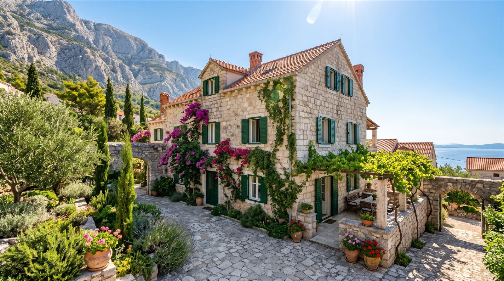

Dobrodošli

„Dođite kao gosti, odlazite kao prijatelji.“
Nudimo tri uređena apartmana u mirnom dijelu Makarske, samo 150 metara od plaže. Svaki apartman ima klimu i besplatan parking, a gostima smo uvijek na raspolaganju za savjet o izletima, plažama i restoranima.
Jutro započnite kavom na terasi uz miris borova, dan provedite na kristalno čistom moru, a večer u šetnji rivom. Bilo da dolazite u dvoje, s obitelji ili s prijateljima, kod nas ćete pronaći apartman po svojoj mjeri.
Kuću vodimo kao obitelj i svakom gostu posvećujemo osobnu pažnju – od dočeka do posljednjeg dana odmora.
Naši apartmani
 Lavanda
Lavanda
 Maslina
Maslina
 Ružmarin
Ružmarin
Makarska
Makarska je središte Makarske rivijere, smještena između planine Biokovo i mora. Poznata je po dugim šljunčanim plažama, šetnici uz more i živahnom staromu gradu.

Plaže i šetnica
Gradska plaža proteže se uz borovu šumu, a šetnica uz more vodi od rive do poluotoka Sveti Petar.

Stari grad
U središtu grada je Kačićev trg s crkvom svetog Marka, a uske kamene ulice vode do luke i rive.

Biokovo
S vrha Biokova i staklenog vidikovca Skywalk pruža se pogled na cijelu rivijeru i otoke.

Izleti
Trajektom stižete na Brač, brodom do Hvara, a Split i Dubrovnik su blizu za jednodnevni izlet.
Više o događanjima pročitajte na stranicama Turističke zajednice grada Makarske.
Javite nam se
Imate pitanje ili želite rezervirati? Pošaljite upit i javit ćemo vam se u roku od 24 sata.
Rezerviraj Kontakt